Sistema de Gestión Integral para el Club Judicial Villa Mercedes
Práctica Profesional Supervisada — Ingeniería en Sistemas de Información · 2026
DNI 45.474.097 · Mat. 35-7886-22
DNI 34.833.221 · Mat. 35-7889-22
DNI 44.994.312 · Mat. 35-7889-22
¿Qué problema resolvimos?
La realidad operativa del Club Judicial antes de la informatización
Planillas de cálculo dispersas sin sincronización ni copias de seguridad.
Superposición frecuente de turnos en canchas y quinchos anotados en papel.
El socio no podía consultar su deuda ni reservar fuera de horario de guardia.
Objetivos del Proyecto
Modernización digital, automatización integral y autogestión 24/7
Diseñar e implementar un sistema web que centralice la gestión social, deportiva y financiera del Club Judicial bajo una arquitectura modular y segura.
- Autogestión 24/7: Reservas de canchas/salones, consultas de estado y trámites online desde cualquier dispositivo.
- Centralización Operativa: Padrón único de socios y turnos en tiempo real, erradicando planillas manuales y solapamientos.
- Automatización de Cobranzas: Pasarela de pago digital y procesamiento masivo de aportes con conciliación ágil.
- Seguridad e Integridad: Control de accesos por roles, auditoría de cambios y resguardo permanente de la información.
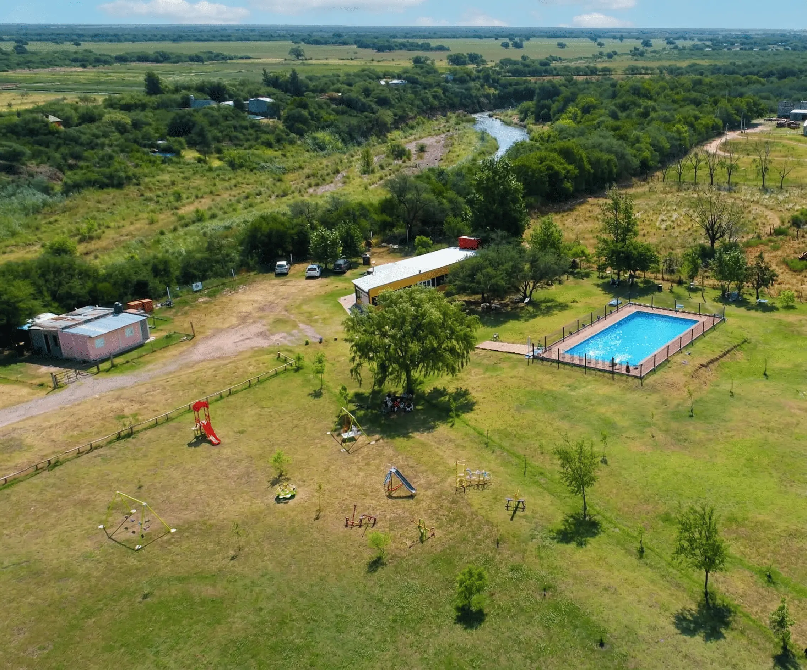
El Equipo y la Distribución de Roles
Especialización técnica con coordinación interdisciplinaria continua
| Integrante | Especialidad | Responsabilidades Clave | Tecnologías Dominantes |
|---|---|---|---|
| Elenio García | Base de Datos | Modelo relacional 3FN, índices B-Tree/FULLTEXT, Event Scheduler, columnas generadas y migraciones. | MySQL 8.0, InnoDB |
| Germán Muñoz | Backend API | API RESTful, JWT doble token, middlewares RBAC, MercadoPago SDK, Resend, Cloudinary y XLSX. | Node.js, Express.js |
| Matías Giménez | Frontend & QA | Single Page Application, Material UI v6, rutas protegidas, testing E2E automatizado con Playwright y CI/CD. | React 19, Vite, Playwright |
Tareas transversales compartidas: Relevamiento de requisitos con la directiva, definición de los 31 casos de uso, reuniones quincenales de avance y despliegue final en Railway.
La Organización: Club Judicial
Asociación civil deportiva, social y cultural de Villa Mercedes
- Entidad civil sin fines de lucro en Villa Mercedes, San Luis.
- Nuclea a empleados del Poder Judicial de la 2da Circunscripción y comunidad afín.
- Ofrece canchas de pádel, fútbol, quincho cerrado, salón de fiestas y actividades.
- Comisión Directiva: Definición arancelaria y gobierno institucional.
- Secretaría: Padrón social, altas de socios y legajos.
- Tesorería: Liquidación de cuotas, planillas judiciales y cobros.
- Subcomisión de Alquileres: Asignación y control de turnos deportivos.
Metodología de Desarrollo
Ciclo ágil iterativo: relevamiento, feedback continuo por WhatsApp/reuniones y backlog en Notion
Entrevistas con Fernando Rigoni, análisis de planillas históricas y modelado relacional antes de codificar.
Desarrollo por dominio (Auth ➔ Socios ➔ Espacios ➔ Pagos ➔ Noticias) para validar módulos de punta a punta.
Gestión de más de 190 tareas y requerimientos con asignaciones, prioridades y trazabilidad completa de blockers.
Validación continua: correcciones del tutor vía WhatsApp y reuniones técnicas con Fernando Rigoni; ciclo donde nos pedían módulos, los revisaban y corregíamos o sumábamos nuevas necesidades surgidas.
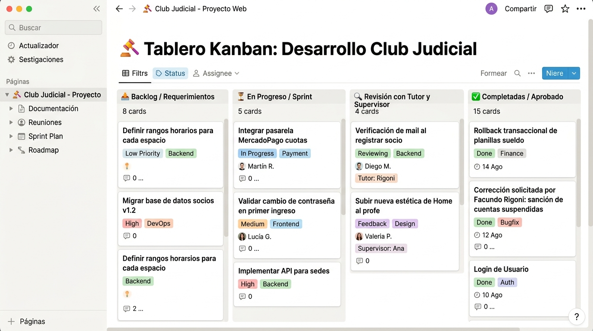
Control de Versiones y Pipeline de CI
Flujo GitFlow protegido y validación automatizada con GitHub Actions
-
Rama
mainprotegida contra pushes directos. -
Ramas
feature/*yfix/*independientes. - Pull Requests obligatorios con revisión de código de pares.
- Pipeline automatizado en GitHub Actions (Ubuntu runner).
- Ejecución de suite Playwright E2E ante cada PR.
- Merge bloqueado si algún test falla.
Arquitectura General del Sistema
Patrón MVC desacoplado para web moderna y API RESTful
React 19 + Vite: Single Page Application. Enrutamiento cliente, Material UI v6 responsivo y Axios.
Node.js + Express: API RESTful stateless. Doble JWT, express-validator, pagos y webhooks.
MySQL 8.0 (InnoDB): ACID, claves foráneas, índices B-Tree/FULLTEXT y Event Scheduler.
Stack Tecnológico Completo
Ecosistema moderno, mantenible y de alto rendimiento
Ya habíamos trabajado con React y Node.js en la materia Programación Web. Aprovechar esa base técnica nos permitió arrancar sin perder tiempo aprendiendo tecnologías desde cero y enfocarnos de lleno en los requerimientos del club.
Es el motor de base de datos relacional más confiable, conocido y fácil de integrar. Al manejar dinero, cuotas de socios y turnos que no pueden superponerse, una base de datos con tablas bien relacionadas nos asegura que los datos no se mezclen ni se pierdan.
Actores y Modelo de Permisos (RBAC)
Separación de perfiles sociales y 5 roles de backoffice
- Particular / Invitado: Alquiler directo vía token único sin registro.
- Socio Común: Tarifas bonificadas y gestión familiar.
- Socio Adherente: Cuota mensualizada y pagos online.
- Socio Vitalicio: Exento de cuota con plenos derechos.
-
SUPERADMIN: Control total y gestión de administradores. -
ADMIN_USUARIOS: Padrón de socios y solicitudes de cambio. -
ADMIN_ALQUILER: Turnos deportivos y devoluciones de seña. -
ADMIN_PLANILLAS: Importación masiva XLSX y Rollback. -
ADMIN_NOTICIAS: Redacción editorial y programación.
Modelado de Casos de Uso (31 Casos)
Diagramas UML formales para Portal de Autogestión y Backoffice
Registro, Login, Catálogo, Alquiler Socio/Invitado, Pago de Cuotas y Perfil.
Aprobación de socios, horarios de espacios, cancelación con seña, planillas y noticias.
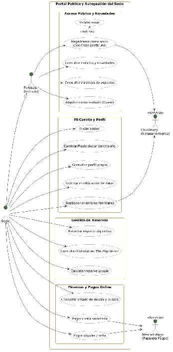
Base de Datos: Autenticación y Roles
Desacoplamiento de cuentas, integridad y hashing seguro
Separamos la cuenta de acceso (Usuario) de los datos civiles del padrón (Socio).
- Administradores no socios: Permite que personal administrativo opere sin figurar como socios.
- Privacidad y seguridad: El login solo lee credenciales livianas, sin exponer datos personales ni bancarios en el token.
- Tabla intermedia
Usuario_Rol: Permisos granulares N:M (Superadmin, Secretaría, Alquileres, Tesorería, Noticias) con CASCADE. - Zero contraseñas planas: Hashing criptográfico irreversible Bcrypt (60 caracteres con 10 salts).
- Unicidad estricta: Claves
UNIQUEa nivel motor enUsername,DNIyEmailcontra duplicidades.
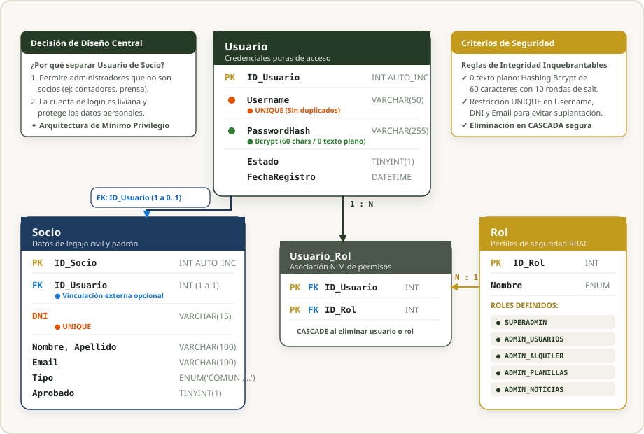
Backend: API de Autenticación
Esquema de doble token JWT y autorización RBAC
-
Access Token: Corta duración (15-60 min).
En header
Authorization: Bearer. - Refresh Token: 7 días de vigencia para renovación silenciosa sin re-login.
- BcryptJS: Cifrado de contraseñas con 10 rondas de salteo.
POST /api/auth/login-admin
POST /api/auth/refresh-token
POST /api/auth/validate-email
POST /api/auth/reset-password
Middleware requireRole() valida firma y roles en
cada request protegido.
Frontend: Pantallas de Acceso y Rutas
Interfaces diferenciadas, carga con Cloudinary y enrutamiento protegido
-
LoginPage(socios) yAdminLoginPage(decodifica roles). -
RegisterPagecon foto de perfil directa a Cloudinary. - Validación interactiva con react-hook-form / MUI.
-
Componentes
ProtectedRouteyProtectedRouteAdmin. - Interceptor Axios: captura 401 y solicita nuevo token con Refresh Token de forma transparente.
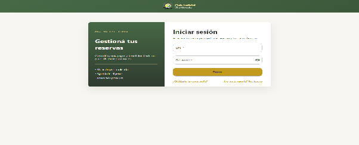
Base de Datos: Socios y Membresía
Modelo normalizado 3FN, trazabilidad de solicitudes e índice FULLTEXT
Desacoplamos cargas familiares mediante Miembro_Familiar y el catálogo Parentesco.
- Sin redundancia: Erradica columnas repetitivas fijas (ej. Hijo1, Hijo2) en la ficha del titular.
- Cargas auditadas: Cada familiar registra DNI, fecha de nacimiento y comprobante en Cloudinary.
- Trazabilidad en
Solicitud_Cambio_Datos: Cero edición directa en DB. Cambiar DNI, email o CUIL exige revisión y aprobación formal de secretaría. - Búsquedas instantáneas: Índice FULLTEXT sobre
(Name, Surname, Email): filtra socios en milisegundos sin escaneos lentos de tabla. - Integridad de admisión: Estados controlados (
PENDIENTE,APROBADO,RECHAZADO).
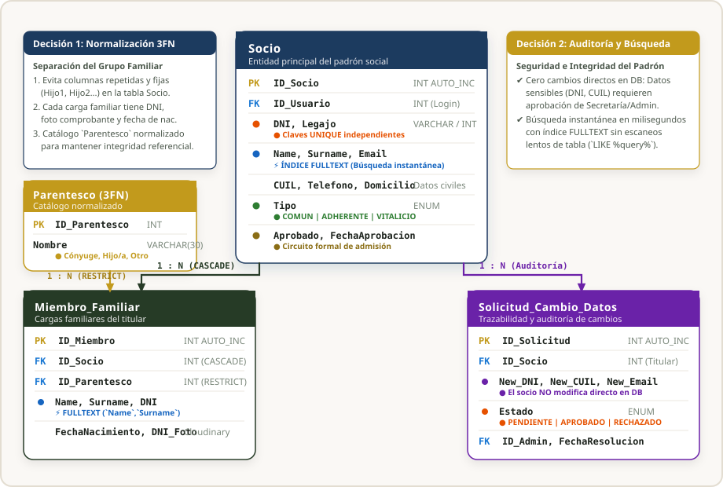
Backend: API de Gestión de Socios
Reglas de negocio, circuito de aprobación y notificaciones Resend
-
El socio nace en estado
Pendiente(sin acceso operativo). - Aprobación o rechazo administrativo con registro obligatorio de motivo.
- Despacho de correo transaccional automático mediante Resend.
- Modificaciones de datos sensibles requieren aprobación de secretaría.
PATCH /api/socios/:id/aprobar
PATCH /api/socios/:id/rechazar
POST /api/socios/solicitud-cambio
Frontend: Panel de Socios y Perfil
DataGrid administrativo y autogestión de credencial y familia
- DataGrid con ordenamiento, filtrado por estado y búsqueda reactiva.
-
Modales contextuales:
AprobarSocioModalyEditarSocioModal. - Pestaña de auditoría para solicitudes de cambio pendientes.
- Credencial digital, estado de cuenta y foto de perfil en Cloudinary.
- Gestión de miembros familiares adjuntando foto del DNI.
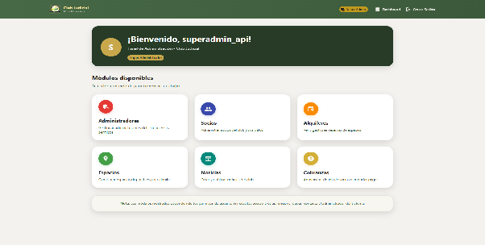
Base de Datos: Espacios y Alquileres
Disponibilidad horaria y liberación automática vía Event Scheduler
- Diferenciación arancelaria: Tarifas para socio vs. particular, seña mínima y seguro de garantía en
Espacio. - Franjas horarias:
Horario_Espaciocon restricciónUNIQUE (ID_Espacio, DiaSemana, HoraInicio, HoraFin)yCHECK (HoraInicio <> HoraFin). - Control de inventario: Relación intermedia
Espacio_Accesoriocon stock disponible en tiempo real (paletas, redes, pelotas).
- Bloqueo atómico: Tabla
Alquiler_Espaciocon índice único compuesto que erradica solapamientos de reservas. - Acceso de invitados:
TokenSeguimientocriptográfico (64 chars) para pagar y gestionar sin crear usuario. - Liberación automática: Evento en MySQL ejecutado cada 60s: si no registra seña en 1 hora (
FechaExpiracion < NOW()), expira y libera el turno a la comunidad.
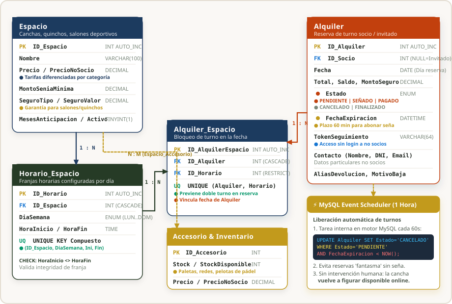
Backend: API de Alquileres y Turnos
Concurrencia atómica, token de invitado y reintegros
- Verificación atómica en transacción SQL para impedir solapamientos.
-
Token de Invitado:
TokenSeguimientoúnico para no socios, permitiendo consultar y pagar vía email sin registrarse. - Cancelación con >48 hs calcula devolución de seña y registra Alias/CBU.
POST /api/alquileres (Crear reserva)
GET /api/alquileres/guest/:token (Invitado)
PATCH /api/alquileres/:id/cancelar
Frontend: Catálogo y Wizard de Reserva
Selección en tiempo real, desglose de seña y autogestión
- 1. Selección de fecha en calendario dinámico.
- 2. Grilla de turnos: verde disponibles, ocupados bloqueados.
- 3. Accesorios con cálculo en vivo de seña y seguro.
-
MisAlquileresPage: Historial, botón pagar saldo o cancelar. -
AlquilerGuestPage: Vista directa para invitados tokenizados.
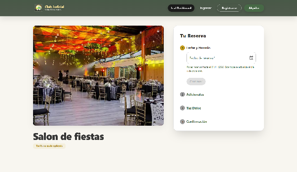
Base de Datos: Cuotas, Pagos y Cajas
Soporte de pagos parciales y trazabilidad de ingresos
- Control matemático:
Cuota.PorcentajePagado DECIMAL(3,2)con restricciónCHECK (0.00 <= valor <= 1.00). - Flexibilidad contable: Soporta saldar cuotas al 50% o adelantos sin descalces en centavos ni redondeos erróneos.
- Imputación atómica:
Pago_Cuotavincula cada cobro a su cuota con clave única compuesta.
- ¿Por qué se desnormaliza?: Evita recálculos continuos
O(N)conSUM()yJOINsobre años de historial de cuotas en operaciones de alta frecuencia (login del socio, ver perfil, validar habilitación de reserva). - Lectura instantánea
O(1):Deuda_Socio.Cant_Cuotasentrega el saldo al milisegundo; la integridad se mantiene con transacciones SQL atómicas en cada pago o planilla. - Libro Diario en
Caja_Movimiento: RestricciónUNIQUE (ID_Pago)yCHECK (Monto > 0): cada peso ingresado audita medio de cobro y conciliación con pasarela.
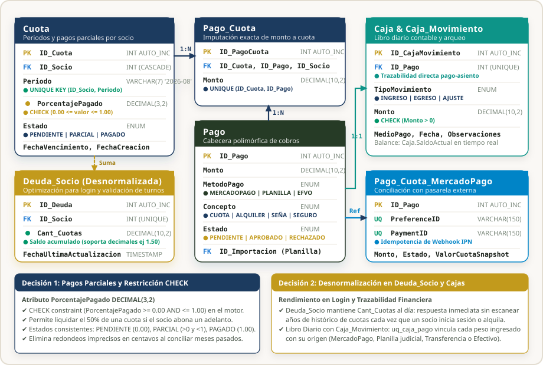
Backend: MercadoPago y Planillas con Rollback
Checkout Pro, Webhooks IPN y procesamiento XLSX seguro
-
Generación de preferencias seguras con
back_urlsdinámicas. - Webhooks IPN asíncronos: Actualización desatendida e idempotente de cuotas y alquileres confirmados.
-
Librería
xlsx: Procesa retenciones de sueldos judiciales por DNI. - Rollback Transaccional: Capacidad de deshacer una planilla errónea restaurando deudas anteriores en un clic.
Frontend: Pago de Cuotas y Tesorería
Autogestión de deuda, importador drag & drop y 6 páginas de retorno
Resumen mensualizado, selección de cuotas y botón oficial MercadoPago.
Drag & drop de archivos .xlsx, previsualización
de errores y botón de Rollback.
Vistas de Éxito, Pendiente y Fallo para cuotas y alquileres.
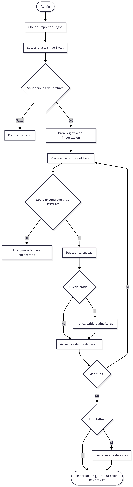
Base de Datos: Noticias y Categorías
Estructura periodística y programación de publicaciones
- Anatomía de prensa:
Volanta(sección),Titulo,Copete(bajada de tarjeta) yCuerpo (LONGTEXT)para artículos editoriales completos. - Multimedia enriquecida: Soporte nativo para
EmbedLink(reproductor YouTube responsivo) y galeríaNoticia_Imagenen Cloudinary. - Catálogo
Categoria(3FN): Normalización de etiquetas (Torneos, Obras, Sociales) eliminando cadenas repetidas.
- Publicación diferida: Subcomisión de prensa programa comunicados; la query pública filtra
Estado = 'PUBLICADO' AND FechaPublicacion <= NOW()con 0 exposición prematura. - Auditoría de autor:
ID_Autorvincula conUsuariocon políticaON DELETE SET NULLpreservando el histórico de noticias del club. - Gobierno editorial: Creación y edición restringida estrictamente a roles
ADMIN_NOTICIASySUPERADMIN.
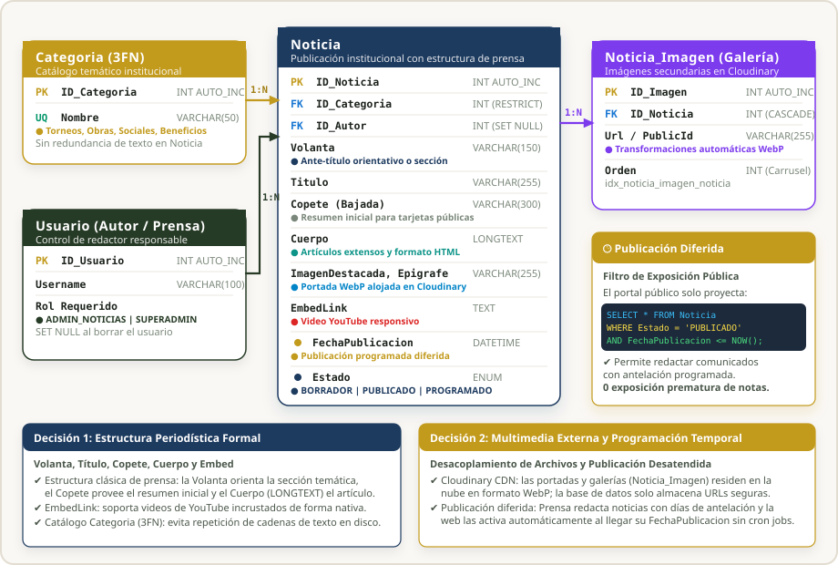
Backend: API de Prensa y Cloudinary
Subida en memoria, optimización en la nube y sanitización XSS
- Multer en memoria y SDK de Cloudinary: transformación a WebP y CDN rápido.
- Sanitización de HTML enriquecido contra inyecciones XSS.
-
Control estricto restringido al rol
ADMIN_NOTICIAS.
POST /api/noticias (Admin prensa)
PATCH /api/noticias/:id
GET /api/categorias
Frontend: Portal Editorial y Portada
Editor visual con previsualización en vivo y lectura cuidada
- Editor con previsualización simultánea.
- Programación diferida con selector de fecha/hora.
- Subida de fotografía Cloudinary con indicador de progreso.
-
Componentes
NewsListyNewsCardcon hover animado. -
NoticiaDetallePage: Tipografía editorial Playfair Display y reproductor de video responsivo.
Testing E2E Automatizado (Playwright)
18 Archivos de especificación: Suite Real y Suite Mock
- Ejecución contra backend y base de datos real de pruebas.
- Ciclo completo de registro, aprobación y login de socio.
- Reserva completa de turnos deportivos y pagos simulados.
- CRUD de espacios, noticias y usuarios administrativos.
-
Interceptación HTTP vía
page.route()sin backend. - Validación ultrarrápida de estados visuales y manejo de errores 401/403/500.
CI y Aislamiento de Datos de Prueba
Idempotencia de pruebas y retención de artefactos de debugging
- Base de datos efímera réplica para testing independiente.
- Sufijos aleatorios únicos en DNI y usuarios para evitar colisiones.
- Helpers compartidos para login y preparación de estados por API.
- Bloqueo estricto del merge si un solo test falla.
- Retención de grabaciones en video, capturas y trazas durante 7 días para depuración inmediata.
Despliegue y Arquitectura Cloud
¿Cómo y dónde está publicado el sistema en internet?
- Acceso desde cualquier lugar: La web se abre desde celulares, tablets o computadoras sin instalar nada.
- Carga instantánea: La página está optimizada para que cargue en menos de un segundo.
- Conexión segura: Funciona con
https://y candado verde para proteger los datos de los socios.
- Activo las 24 horas: Si ocurre algún error en el servidor, se reinicia solo automáticamente.
- Seguridad de contraseñas: Las claves de MercadoPago y del sistema no están en el código, están protegidas en la nube.
- Conexión con servicios: Procesa pagos online, sube fotos a Cloudinary y envía emails a los socios.
- Red privada e invisible: Nadie puede entrar a la base de datos desde internet; solo nuestro servidor tiene acceso.
- Respuesta inmediata: Como el servidor y la base de datos están juntos en Railway, las consultas tardan menos de 2 milisegundos.
- Limpieza de turnos: Si alguien reserva una cancha y no la paga, el sistema la libera solo a los 15 minutos.
Conclusiones: Frontend & QA
Balance individual del Desarrollador Frontend
- Consolidación en React 19, Vite y sistema de diseño unificado en Material UI.
- Seguridad en cliente con RBAC y renovación silenciosa con interceptores Axios.
- Integración exitosa de pasarela MercadoPago y Cloudinary.
- Adopción de pruebas automatizadas con Playwright cubriendo flujos reales.
- Garantía de cero regresiones en producción gracias a CI en GitHub Actions.
Conclusiones: Backend & API REST
Balance individual del Desarrollador Backend
- Diseño de API RESTful desacoplada, modular y escalable.
- Seguridad robusta con esquema de doble token JWT y control granular de roles.
- Orquestación confiable de servicios en la nube (MercadoPago, Resend, Cloudinary).
- Módulo de liquidación de sueldos por planilla Excel con capacidad de Rollback contable.
- Manejo de transacciones atómicas para reservas deportivas sin solapamiento.
Conclusiones: Base de Datos
Evolución del modelo relacional, optimización y resolución de problemas reales mediante migraciones
- Tercera Forma Normal (3FN): Estructuramos más de 20 tablas sin datos duplicados ni inconsistencias, garantizando integridad referencial estricta.
-
Desnormalización Inteligente: Guardamos el saldo acumulado en
Deuda_Sociopara que la consulta de deudas sea instantánea sin sumar cientos de filas cada vez. - Búsquedas en Sub-milisegundos: Con índices B-Tree e índices FULLTEXT en Socios, el buscador por nombre, apellido o CUIL responde en menos de 2 ms.
- Mantenimiento Autónomo: Tareas programadas con MySQL Event Scheduler liberan turnos impagos y recalculan resúmenes diarios de caja automáticamente.
Seguro_Devolucion y campos para cobrar un depósito en garantía y registrar si se reintegra total, parcial o se retiene por roturas.Espacio_Precio_Dia para cobrar tarifas distintas en fin de semana vs días hábiles, tanto para socios como para invitados.Impacto Organizacional y Trabajo Futuro
Transformación del Club Judicial y líneas evolutivas
- Cero solapamientos en reservas de canchas y salones.
- Transparencia total: el socio consulta y paga cuotas 24/7.
- Reducción de carga administrativa y erradicación del papel disperso.
- Notificaciones Push en tiempo real para avisos de reservas.
- Módulo de Business Intelligence y métricas para la Comisión Directiva.
- Aplicación móvil nativa en React Native y control de acceso QR en molinete.
¡Muchas Gracias!
Quedamos a disposición del Tribunal Evaluador para la ronda de preguntas.
Sistema de Gestión Integral — Club Social, Cultural y Deportivo Judicial
Elenio García (Base de Datos) · Germán Muñoz (Backend) · Matías
Giménez (Frontend)
Tutor: Ing. Alejandro Marcelo Altaba · Supervisor: Fernando
Rigoni · 2026